I captured each sequence by staying relatively still and rotating from left to right, using the iPhone camera grid to keep the views roughly aligned. I tried to avoid moving subjects and kept exposure locked to reduce brightness differences between shots. One thing I didn't do that well was rotating my torso instead of keeping the camera lens in exactly the same position. This can introduce parallax error where nearby objects shift relative to distant surfaces, so a single homography may not align both perfectly (this will be seen later!). Moving subjects can also produce ghosting.
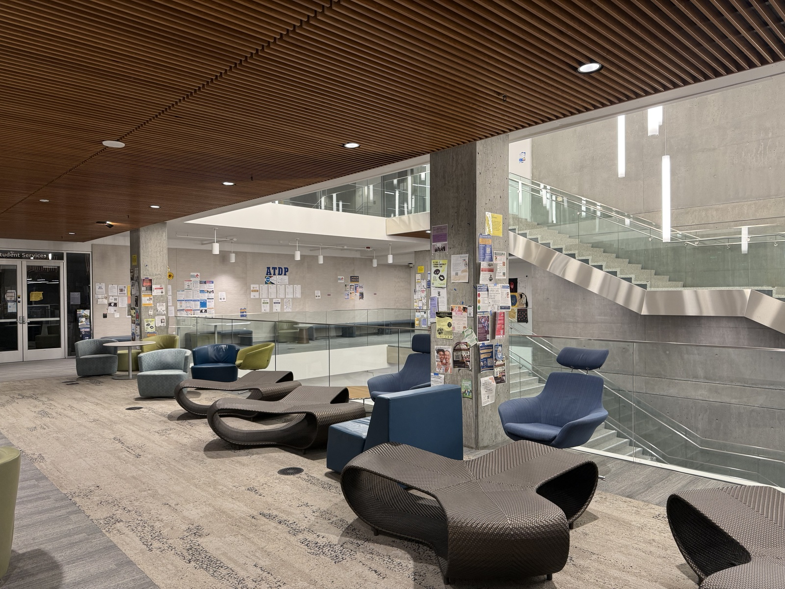
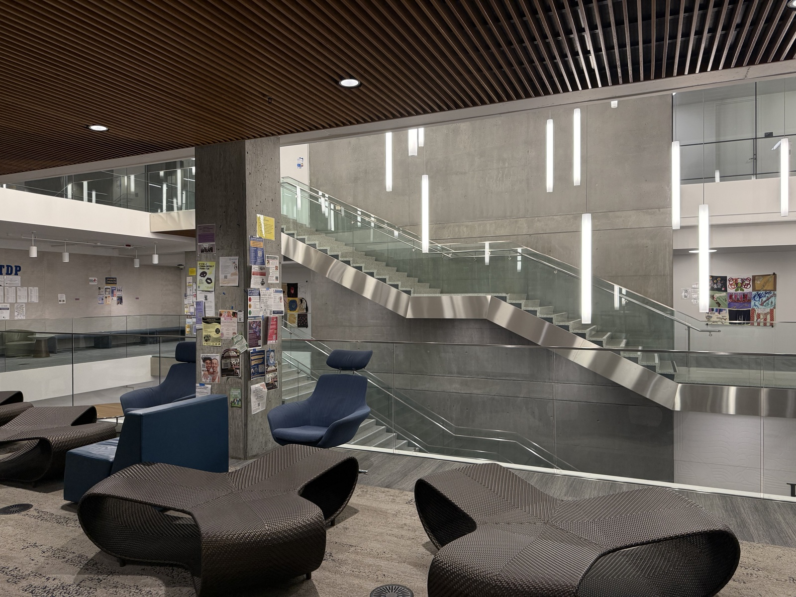
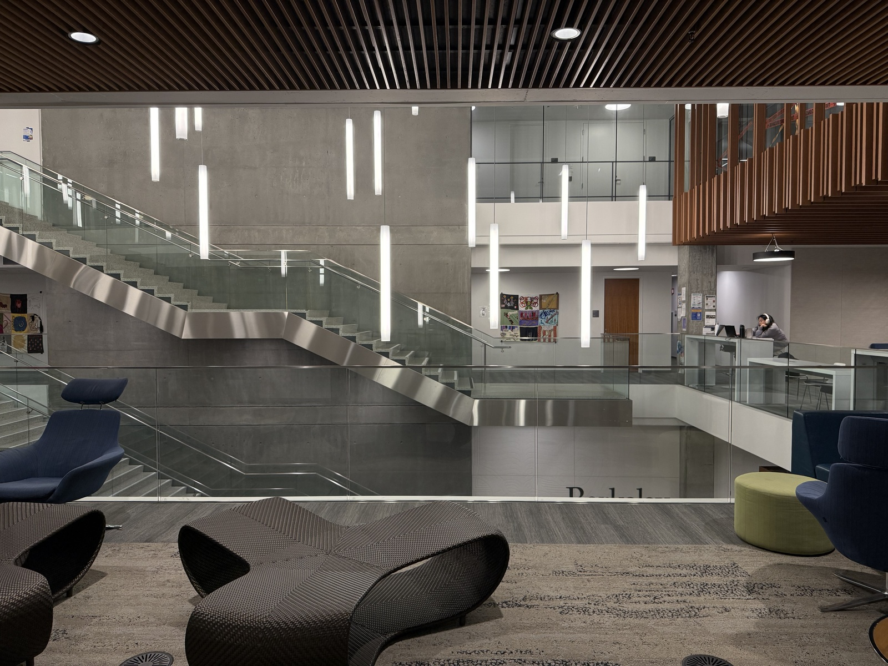
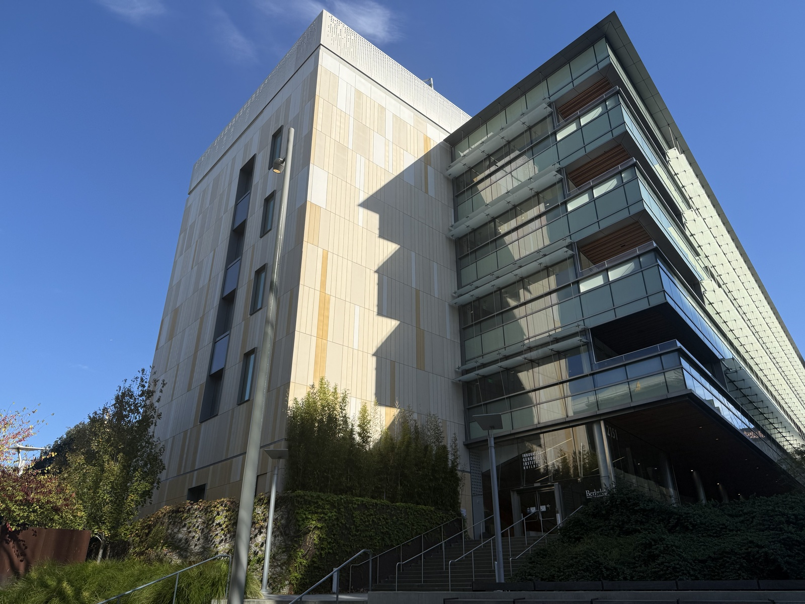
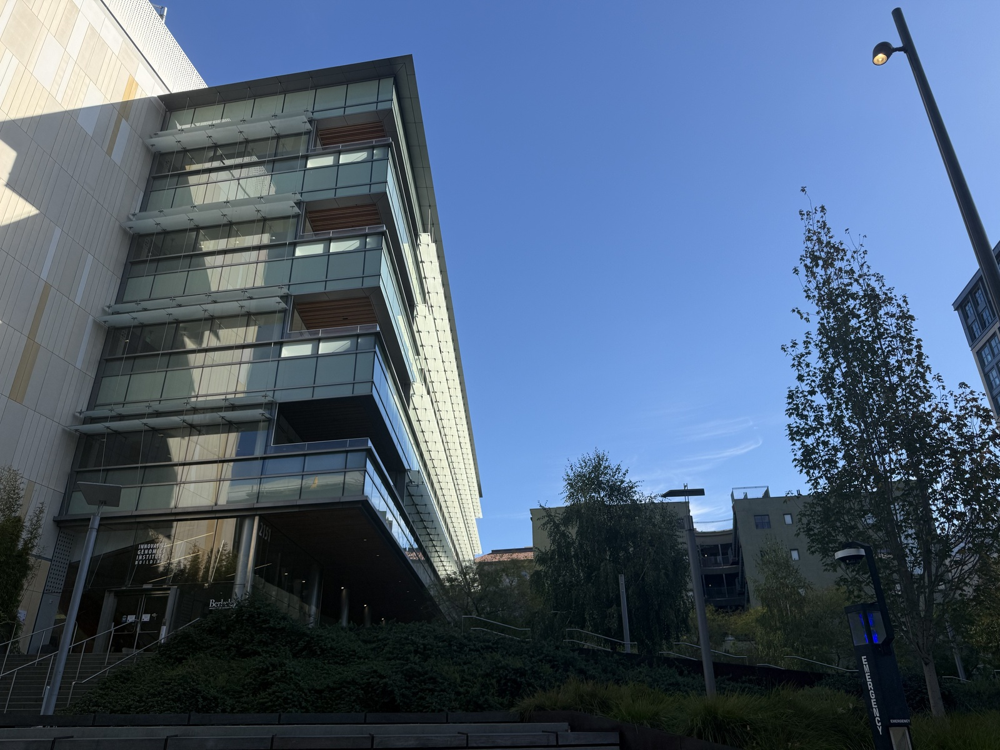
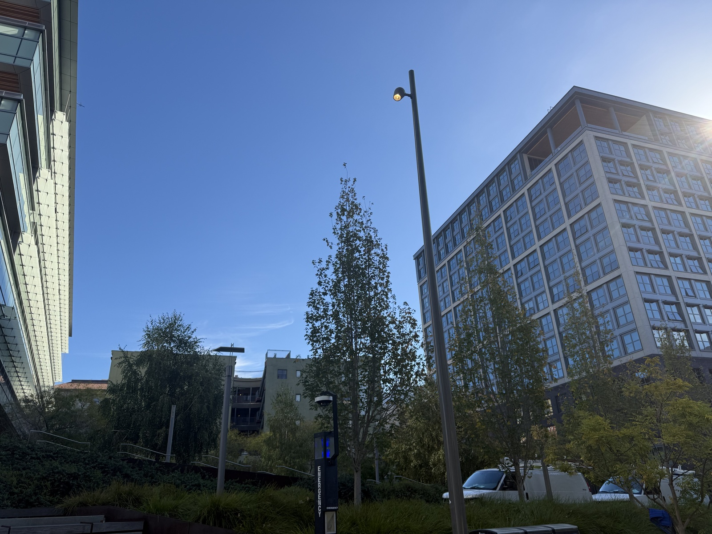
Distinctive details such as the poles in the overlapping regions made it easier to find matching locations. These scenes contain objects at varying depths, as illustrated by furniture and the more distant walls.
The homography is a powerful tool to transform images. We define it as a 3 × 3 matrix that maps homogeneous image coordinates between views. The nine entries have eight degrees of freedom: multiplying every entry by the same nonzero constant scales all three output coordinates equally, and dividing by the third coordinate cancels that constant. We fix the bottom-right entry to 1 to remove this scale ambiguity. The extra terms g and h allow perspective effects, meaning that parallel lines need not remain parallel (unlike affine transformations). For this matrix, c and f provide translation terms before division.
To understand how we solve our system of equations, we first observe that each matching pair (x, y) → (u, v) contributes two equations. We multiply by the common denominator, collect the coefficients of a to h, and organise the equations into matrices. A contains those known coefficients, the vector h contains our eight unknown entries of H, and b contains the corresponding destination coordinates u and v.
To address why we use more than four points: four point pairs provide the minimum eight equations, but coordinates are noisy! They make a fit based on only four pairs and are sensitive to small errors. Each panorama fit here thus uses 16 pairs instead, giving a 32 × 8 system. I use least squares, which minimizes the sum of squared residuals in the linear equations. Before solving, I center and scale both point sets so their mean distance from the origin is √2. This makes the coefficients more comparable in magnitude and improves numerical conditioning. I then transform the solution back to the original image coordinates.
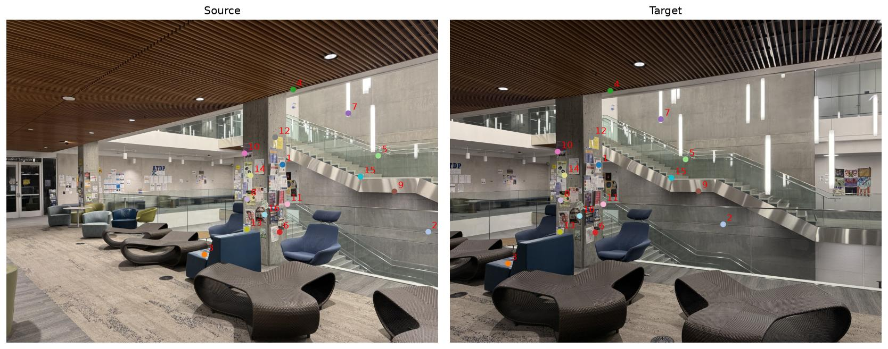
H = [[ 1.990638e+00 -1.310017e-02 -1.138235e+03]
[ 3.710712e-01 1.618763e+00 -3.808627e+02]
[ 6.016556e-04 -2.359177e-06 1.000000e+00]]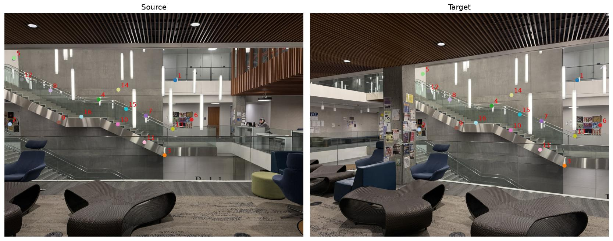
H = [[ 5.067593e-01 -2.635269e-02 5.712471e+02]
[-1.826115e-01 8.044057e-01 1.353938e+02]
[-3.004972e-04 -2.510404e-05 1.000000e+00]]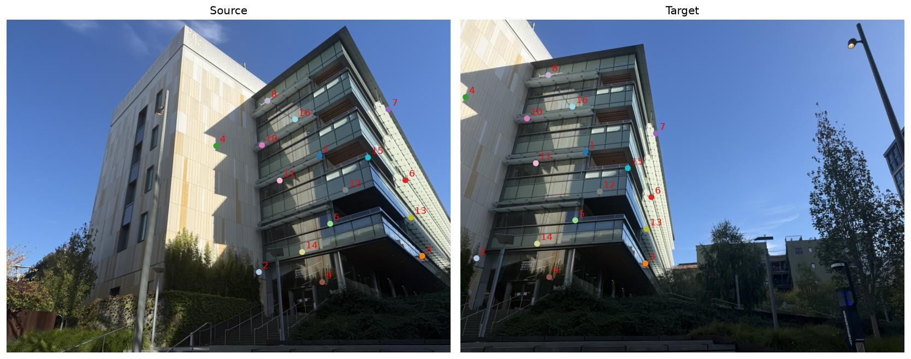
H = [[ 2.699926e+00 -7.440162e-01 -1.669044e+03]
[ 1.312311e+00 2.066647e+00 -1.426089e+03]
[ 1.174118e-03 -1.668361e-04 1.000000e+00]]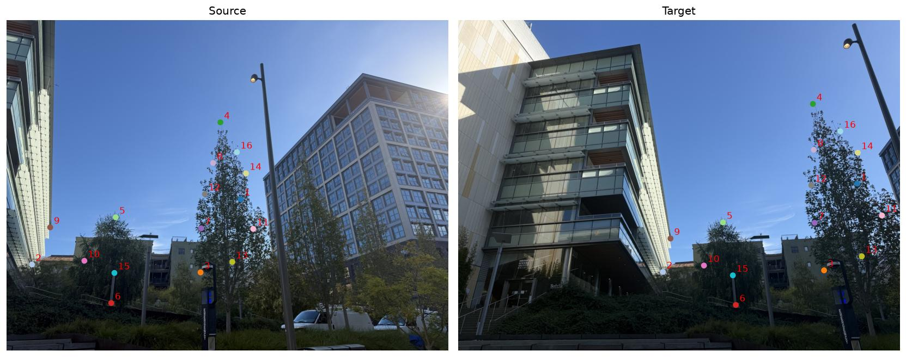
H = [[ 4.570366e-01 1.313588e-01 5.400405e+02]
[-3.445539e-01 7.802774e-01 2.003764e+02]
[-3.291061e-04 -3.098155e-05 1.000000e+00]]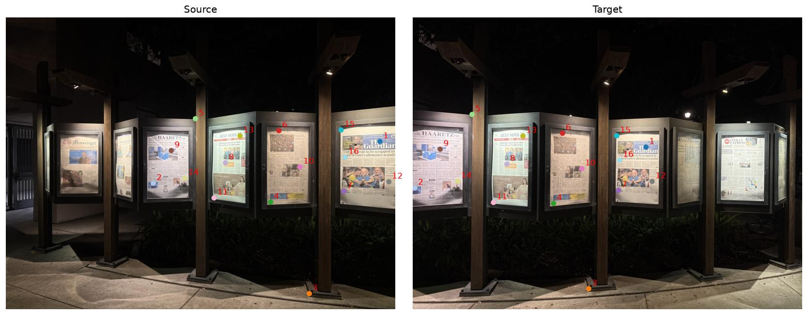
H = [[ 1.947645e+00 -3.010733e-02 -1.150482e+03]
[ 3.755175e-01 1.616439e+00 -3.837016e+02]
[ 5.984720e-04 -2.110641e-05 1.000000e+00]]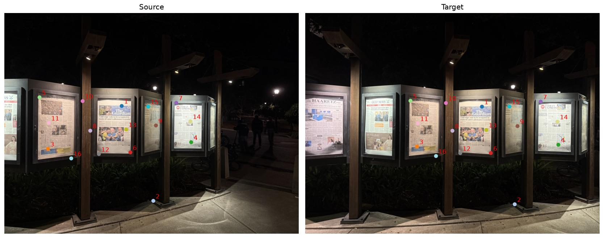
H = [[ 6.026786e-01 2.397124e-03 4.296359e+02]
[-1.440862e-01 8.423254e-01 9.794551e+01]
[-2.405578e-04 3.529390e-06 1.000000e+00]]The reported RMSE measures the distance between transformed source points and their matched reference points. It essentially describes how well H fits these selected correspondences. The six fits have RMSE values between 0.668 and 0.969 pixels. (lower RMSE means better fit). We use SIFT (algorithm to detect and match important features) to propose candidates and RANSAC (algorithm for homography estimation) to reject inconsistent matches. We then selected matching points spread across the overlapping image area. The saved matches were visually inspected during preparation.
Here, we use inverse warping. For each destination pixel, we apply an inverse homography, divide by the resulting third coordinate, and sample the source image. This mitigates the holes issues - forward mapping can cause source pixels to land between the aforementioned destination pixels and leave holes. If a destination pixel maps outside the source image, I simply mark that destination pixel invalid. To determine the output canvas, we transform the four source corners with H, taking the minimum and maximum x and y coordinates to determine the top left and top right and bottom left and bottom right limits. If the bounds include negative coordinates, I translate the canvas just enough for everything to be non-negative.
Next, after knowing where the pixels are, we need to know what colors they should be! The homography gives us a source location (x, y), which may fall between pixels. Let I(x, y) denote a source pixel’s color. We can define the upper-left integer neighbor and the fractional distances from it (how far our mapped source location is from that upper-left neighbor) as:
Nearest-neighbor sampling rounds the source coordinate to the nearest integer pixel and copies its color:
Bilinear sampling instead combines the four neighboring colors. We weight them based on how close it is to the source location (closer, heavier):
The four weights sum to one. Coordinates outside the source bounds are marked invalid. For valid coordinates at the right or bottom boundary, neighbor indices are clamped to the last available pixel; tiny floating-point boundary errors are also clamped.
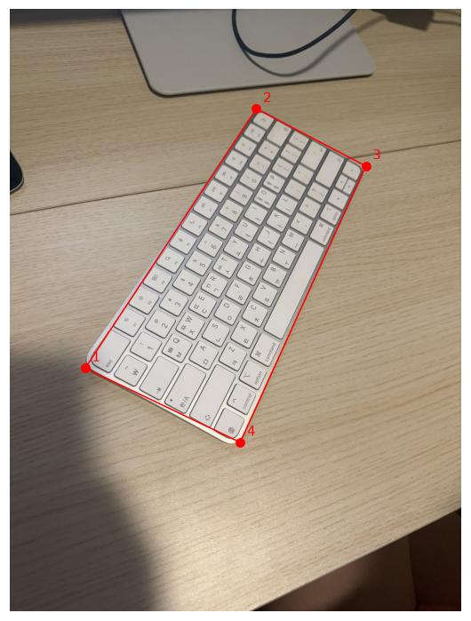
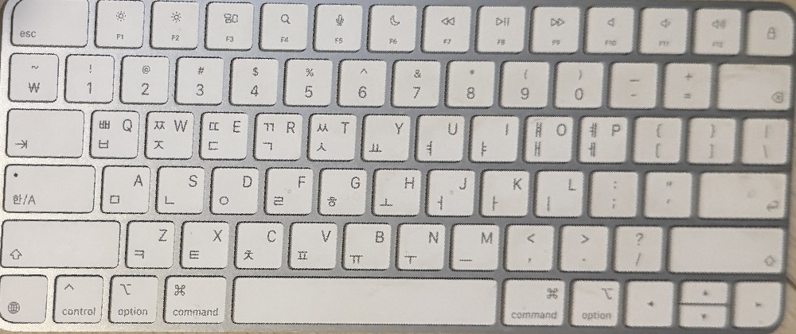
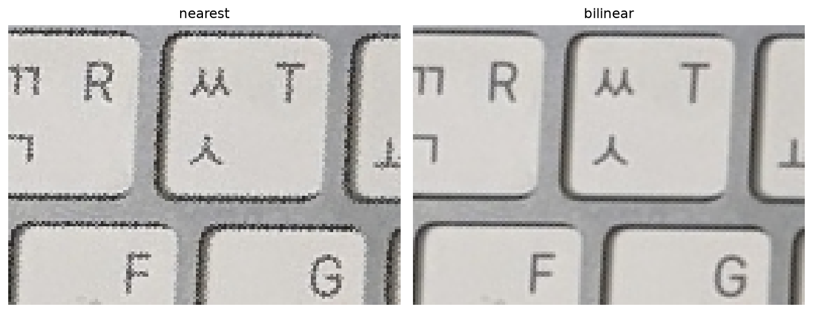
H = [[ 4.961240e-01 -1.035826e+00 8.882631e+02]
[ 9.938917e-01 6.555456e-01 -8.237318e+02]
[-2.432300e-04 3.779388e-04 1.000000e+00]]| Method | Output | Median time, 3 runs |
|---|---|---|
| nearest | 1000 × 420 | 15.52 ms |
| bilinear | 1000 × 420 | 40.37 ms |
I mapped four corners of the keyboard’s outer frame to a 1000 × 420 rectangle. The outer frame becomes rectangular and the key rows appear almost parallel. Nearest-neighbor sampling produces more abrupt pixel transitions (the blockiness) along the key outlines and lettering. Bilinear sampling is smoother by nature. The combination of the neighboring samples can be thought of as a form of linear interpolation.
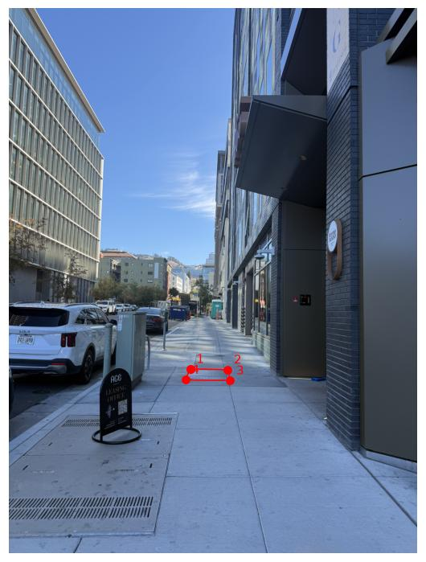
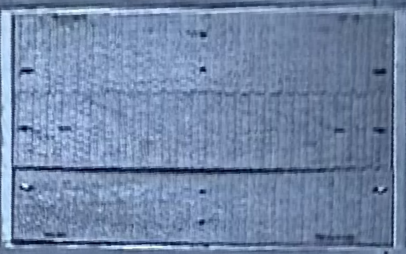
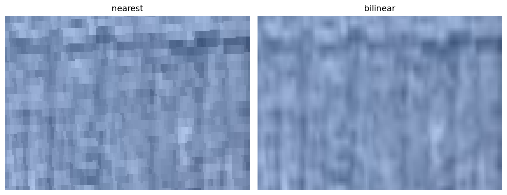
H = [[-3.883535e-01 -1.699047e-01 1.381310e+03]
[ 1.824574e-02 -1.003516e+00 3.759204e+03]
[ 1.076723e-05 -3.213253e-04 1.000000e+00]]| Method | Output | Median time, 3 runs |
|---|---|---|
| nearest | 800 × 500 | 17.10 ms |
| bilinear | 800 × 500 | 33.79 ms |
I rectified the small drain cover beside the utility box by mapping its four outer corners to an 800 × 500 rectangle. Honestly it's quite fascinating. I couldn't actually decipher what was on the drain cover until this class so thanks for teaching me this! The boundary is now rectangular.
Nearest neighbor was faster in both measurements. This is expected. Bilinear sampling requires four source samples and weighted arithmetic, which adds computation. Its results look smoother around edges, while nearest neighbor preserves abrupt, sometimes jagged transitions (which is actually not always worse!).
For each set, I keep the center photograph as the reference and estimate a homography from the left and right images onto that reference. Transforming all source corners (first apply H to corners and find bounds, then subtract by appropriate amounts to determine canvas) gives the bounds of a shared canvas, including its offset from the reference origin. I inverse-warp each image into this canvas and utilise a binary mask to check validity. This mask identifies which canvas pixels have valid source data.
To blend the images together, we use feathering: pixels farther from each warped image’s valid boundary receive larger weights. I compute a weighted average at every covered pixel, dividing by the sum of weights. This normalization avoids increasing brightness simply because several images overlap. Pixels with no contributing image remain transparent in the exported mosaic.
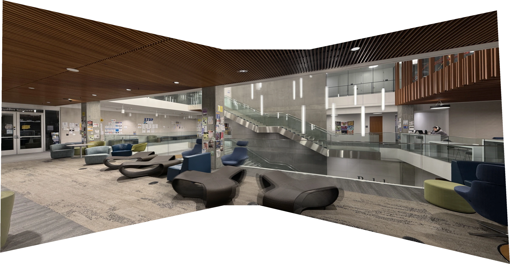
The Berkeley Way West mosaic aligns much of the background, but the nearby chairs show visible ghosting, especially the blue chair and triangular things in front of it. This is likely attributed to my parallax error. The transform fits distant walls well but not nearby furniture. This makes sense since parallax error affects nearby objects more. Keeping the camera center fixed (instead of moving my hips), or using alignment that accounts for different depths, would address the underlying geometry far more effectively.
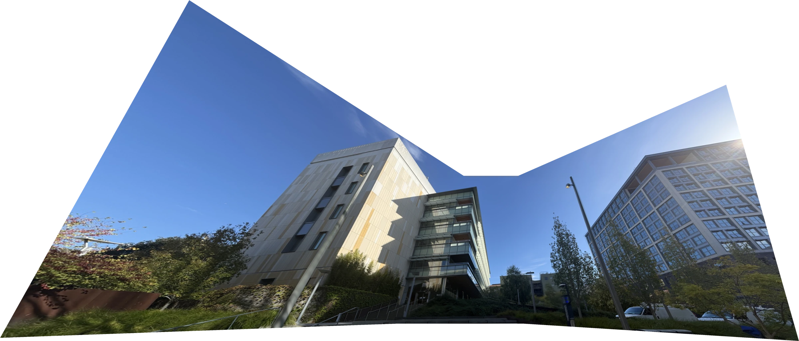
The Innovative Genomics Institute mosaic combines the three views kinda well, although the wide planar projection stretches the outer building regions slightly. There is also some faint blur around narrow structures such as the light poles. I'm honestly not super sure if there was some alignment error or parallax error. I suspect I may have moved the camera slightly while shooting at those awkward angles, which could introduce parallax.
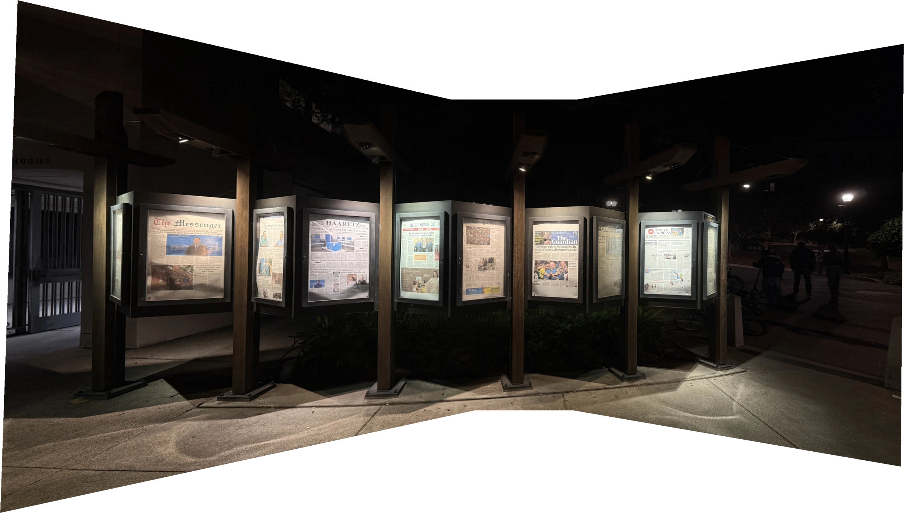
The newspaper display appears to align best of the three sets. The display frames, posts, and newspaper panels remain amazingly consistent across the overlap, and the most prominent surfaces are relatively distant from the camera. The dark background makes smaller defects harder to judge (great for me).
Introspecting, I would prioritize rotating around a fixed camera center, maintaining substantial overlap, avoiding moving subjects, and keeping exposure consistent. Keeping the camera level can help frame a horizontal panorama a bit better. I would inspect the correspondence locations and compare alignment at different depths. Moving subjects may produce ghosting so I'd watch for that too.